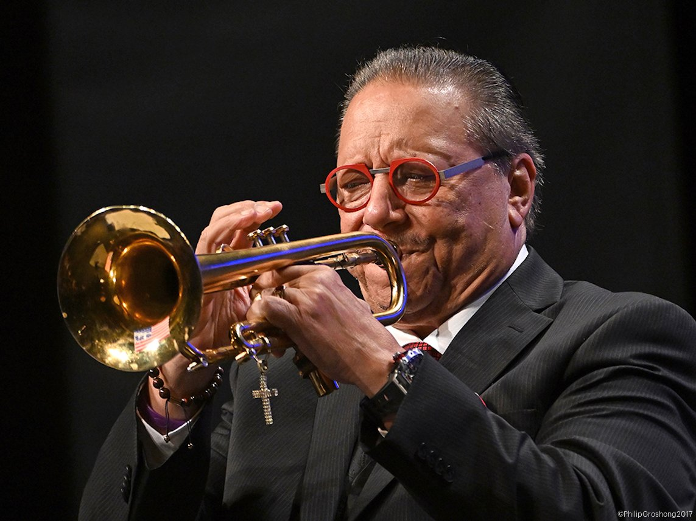
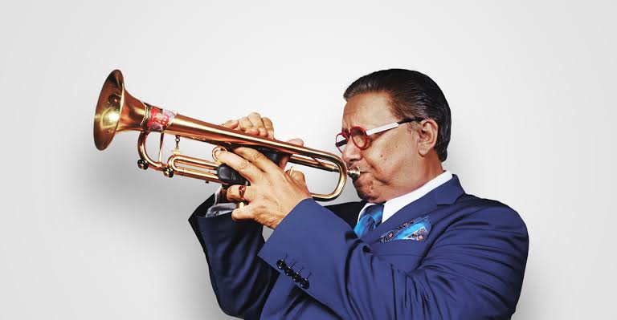

Arturo Sandoval
Nació el 6 de noviembre de 1949 en Artemisa, Cuba Learn moreArturo's Family

Arturo Sandoval nació en una familia pobre en Artemisa, Cuba. Su padre era camionero y tocaba la trompeta de manera amateur, mientras que su madre era costurera. Tiene dos hermanos, uno de los cuales también se dedicó a la música.
NextArturo's Influence

Arturo Sandoval is famous for his incredible trumpet playing skills and his contributions to Latin jazz and jazz music in general. He moved from Cuba in 1990 and has since become a prominent figure in the international jazz scene.
Learn more